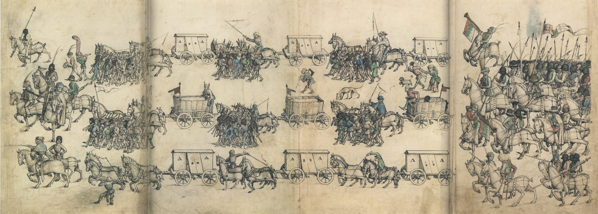

H
eerzug
Skrýt ovládání
Vozová hradba na pochodu · Mittelalterliches Hausbuch, fol. 51v–52r (kolem 1480)
Celek
Čelo
Vozy
Zadní voj
Shora
Krajina
Pauza
Styl: kresba
Předloha
Krajina: keře, tráva, kameny, textury, obloha a osvětlení z
0 A.D.
© Wildfire Games,
CC BY-SA 3.0
Předloha: Mittelalterliches Hausbuch (Wolfegg), fol. 51v–52r – Heerzug. Pochod jde doleva jako na kresbě.

Načítám pochod…